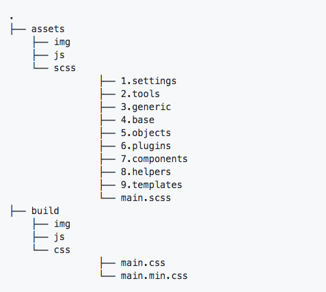

⚡️ Guia de orientação de estilo de escrita de código da equipe de front-end da A2ad ⚡️
1. Motivação
Este documento define a formatação e regras de estilo para HTML e CSS, bem como algumas boas práticas de desenvolvimento. Seu objetivo é melhorar a colaboração, qualidade de código, manutenção e transparência no processo de desenvolvimento.
2. Git
2.1. .gitignore
Usar este arquivo .gitignore.
Caso esteja desenvolvendo algum projeto que não utilize o Snack, adicionar este arquivo .gitignore na raiz do projeto. Ele já possui uma lista de arquivos do sistema que não devem ser enviados com o seu código para o repositório remoto.
Além disso, exclui a configuração de pastas e arquivos para editores mais utilizados, bem como as pastas de dependência mais comuns.
2.2. Branch
Trabalhamos com dois branchs: master e develop.
Ao iniciar o desenvolvimento em um projeto, sempre fazer checkout para a branch develop.
git checkout develop
Caso a branch ainda não exista, ela deverá ser criada.
Nunca comitar na branch master.
2.3. Commit
Sempre fazer a sincronização com o repositório remoto antes de realizar um novo commit. Isso evita potenciais conflitos de versão.
git pull
Todos os commits devem ser escritos em português e devem descrever exatamente do que se trata a alteração. Caso as alterações envolvam mais de uma feature/bug, separar por ponto e vígula as diferentes alterações.
git commit -m "Adiciona galeria de imagens na homepage"
git commit -m "Corrige bug que fazia o formulário de busca no menu principal não abrir; Ajustes de CSS no box de notícias lateral"
De preferência sempre fazer um commit por feature/bug.
Mais sobre escrever bons commits em: How to Write a Git Commit Message.
3. Documentações
Toda a documentação de projetos e configurações ficam hospedados na Wiki da A2ad. Em caso de dúvidas, entrar em contato com algum responsável dentro da equipe de Design e Tecnologia.
4. Dependências
Dar preferência ao uso do Yarn (uma versão otimizada do npm) como gerenciador de dependências.
Antes de usar um pacote de dependência, verifique o seu GitHub. Procure o número de issues abertos, downloads diários e número de contribuidores, bem como a data em que o pacote foi atualizado pela última vez.
- Se for necessária uma dependência menos conhecida, discuta com a equipe antes de usá-la.
- Acompanhe os pacotes atualmente disponíveis e mantenha-os atualizados.
- Veja se algum dos seus pacotes se tornou inutilizado ou irrelevante.
- É um risco potencial importar bibliotecas não utilizadas ou depreciadas e enviá-las para produção.
- Verifique as estatísticas de download para ver se a dependência é muito usada pela comunidade.
- Mais uso significa principalmente mais contribuidores, o que geralmente significa melhor manutenção, o que resulta em bugs sendo descobertos e corrigidos de maneira mais rápida.
- Certifique-se sempre de que a aplicação funciona com as últimas versões de dependências sem quebrar.
- Verifique se o pacote possui vulnerabilidades de segurança conhecidas.
4.1. Consistência de dependências
Certifique-se de que os membros da sua equipe tenha exatamente as mesmas dependências que você.
- O código deve se comportar como esperado e idêntico em qualquer máquina de desenvolvimento.
5. Estrutura de pastas
Se possível, utilizar a seguinte estrutura de organização de pastas:

6. Geral
6.1. Regras gerais de estilo
6.1.1. Protocolo
Usar sempre que possível o protocolo HTTPS para recursos incorporados. Sempre usar o protocolo HTTPS (https:) para imagens e outros arquivos de mídia, folhas de estilo, fontes externas, apis e scripts, a menos que os respectivos arquivos não estejam disponíveis em HTTPS.
6.2. Regras gerais de formatação
6.2.1. Indentação
Indentar utilizando tab uma única vez.
Não usar espaços ou outros tipos de espaçamentos para indentação.
6.2.2. Capitalização
Usar apenas lowercase.
Todo o código tem que ser em lowercase. Isto se aplica para nome de elementos HTML, atributos, valores de atributos, seletores CSS, propriedades e valores de propriedades (com exceção de strings).
6.2.3. Espaço em branco à direita
Remover espaços em branco à direita.
Espaços em branco à direita são desnecessários e podem complicar diffs.
6.3. Regras gerais de Meta Dados
6.3.1. Encoding
Usar UTF-8.
Certificar-se de que o editor de texto escolhido use UTF-8 como encoding de caracteres.
Especifique o encoding nos templates HTML e documentos via <meta charset="utf-8">. Não especifique o encoding de folhas de estilos, pois elas já assumem o uso de UTF-8.
Mais sobre encoding e quando e como especificar eles pode ser encontrado aqui.
6.3.2. Comentários
Explique o código conforme necessário e sempre que possível.
Use comentários para explicar o código. O que ele faz? Para o que serve? Por que a respectiva solução é usada e/ou foi escolhida?
Ser objetivo nos comentários e não pecar por falta de explicação.
6.3.3. Itens de ação
Marcar todos e itens de ação com TODO.
Realçar todos usando a palavra reservado TODO.
Acrescentar um contato (username ou e-mail) em parênteses como o formato TODO(contact).
Acrescentar itens de ação depois de dois-pontos como TODO: item de ação
7. HTML
7.1. Regras de estilo HTML
7.1.1. Tipo de documento
Usar HTML5.
HTML5 (sintaxe HTML) é preferível para todos os documentos HTML: <!DOCTYPE html>
Embora compatível com o HTML, não fechar elementos vazios.
7.1.2. Validação de HTML
Usar HTML válido sempre que possível.
Usar código HTML válido, a menos que isso não seja possível devido a objetivos de desempenho.
Usar ferramentas como W3C HTML validator para testes.
O uso de HTML válido é um atributo de qualidade e uma base mensurável que contribui para o aprendizado sobre a especificação do HTML e restrições técnicas que garante o seu uso correto.